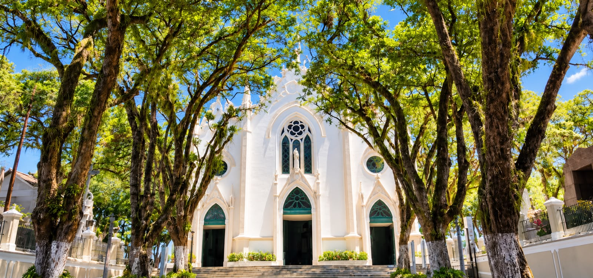

Cemitério Campo Santo: Quase Dois Séculos de Tradição e História na Bahia
Por Equipe Campo Santo Familiar • 05 de Abril, 2026

Quando falamos sobre o Cemitério Campo Santo, não estamos apenas mencionando um espaço físico de repouso. Estamos falando sobre um patrimônio vivo, um lugar onde repousam histórias de famílias baianas.
Uma Instituição Que Atravessa Séculos
Com quase dois séculos de existência, o Cemitério Campo Santo é muito mais que um cemitério tradicional. É um testemunho da evolução social, cultural e espiritual de Salvador e da Bahia. Suas sepulturas contam histórias de personalidades públicas, de famílias tradicionais, de pessoas comuns que deixaram suas marcas na história regional.
A Chancela da Santa Casa: Raízes na Tradição
O Cemitério Campo Santo não surgiu por acaso. Sua existência está intrinsecamente ligada à Santa Casa de Misericórdia, uma das instituições mais antigas e respeitadas da Bahia e do Brasil. A Santa Casa, fundada em 1550, sempre teve como missão o cuidado com os necessitados, os enfermos e, naturalmente, a dignidade na despedida dos falecidos.
Essa ligação histórica coloca o Campo Santo Familiar em uma posição única no mercado baiano. Não é apenas uma empresa de serviços funerários, mas uma continuadora de uma tradição de cuidado que atravessa séculos.
Memória Coletiva: Onde Repousam as Histórias da Bahia
O Cemitério Campo Santo é, em muitos sentidos, um museu ao ar livre. Ao caminhar por seus caminhos, é possível encontrar lápides que marcam momentos importantes, como personalidades, famílias tradicionais, e gerações que construíram a Bahia que conhecemos hoje.
"Para muitas famílias baianas, o Campo Santo não é apenas um lugar onde seus entes queridos repousam. É um lugar de peregrinação, de memória, de conexão com o passado."
Evolução Sem Perder a Essência
O que torna o Cemitério Campo Santo particularmente notável é sua capacidade de evoluir mantendo sua essência. Hoje, o Campo Santo Familiar oferece serviços modernos como:
- Velório on-line para famílias distantes;
- Opções de cremação com processos seguros e respeitosos;
- Crematórios modernos e um avançado sistema de drenagem ambiental.
Conclusão: Uma Instituição Viva
Em uma Bahia que envelhece e se transforma, instituições como o Campo Santo Familiar servem como âncoras, lembrando-nos de quem somos, de onde viemos e para onde queremos ir. Se você quer que sua família seja parte dessa história, que seus entes queridos repousem em um lugar de tradição e respeito, a escolha natural é o Campo Santo Familiar.
Outras Publicações
Seja parte dessa história de cuidado.
Estamos aqui para garantir que sua despedida seja tão significativa e memorável quanto a história que você deixará para trás. Converse com nossos especialistas.
Falar com um Especialista